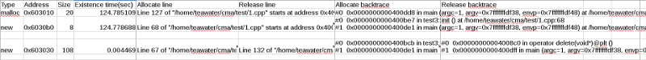

| https://github.com/teawater/cma
|
|
What is CMA?
|
A GDB Python script that analyzes and records C/C++ application memory allocation and release behavior.
CMA has little effect on analyzed C/C++ application performance.
CMA supports X86_32 and X86_64.
|
|
How to use CMA?
|
- CMA just can work with GDB 7.5 or newer version. You can use Get-GDB check the version of GDB in current system and get GDB 7.5 or newer version if you need.
wget https://raw.githubusercontent.com/teawater/get-gdb/master/get-gdb.py
python get-gdb.py
|
- Get CMA.
|
wget https://raw.githubusercontent.com/teawater/cma/master/cma.py
|
-
Make sure C/C++ application that want to analyzes is built with GCC "-g" option to get the memory allocate and release code line infomation.
-
Make sure GDB control the C/C++ application that want to analyzes.
There are some ways:
- Open GDB with a application.(Doesn't need start application because CMA script will auto do it if need.)
-
Attach a running application.
Or
-
Start CMA script inside GDB.
It will let you input some options. Then, exencute application and analyzes its memory allocate and release.
-
When CMA script is running, you can use CTRL-C interrupt its execution and control it.
[0] Record memory infomation to "/home/teawater/tmp/cma.csv".
[1] Continue.
[2] Quit.
Which operation?[0]
Memory infomation saved into "/home/teawater/tmp/cma.csv".
Continuing.
|
|
|
Screenshot
|
This is a screenshot of a cma.csv.

|
{kind=link}